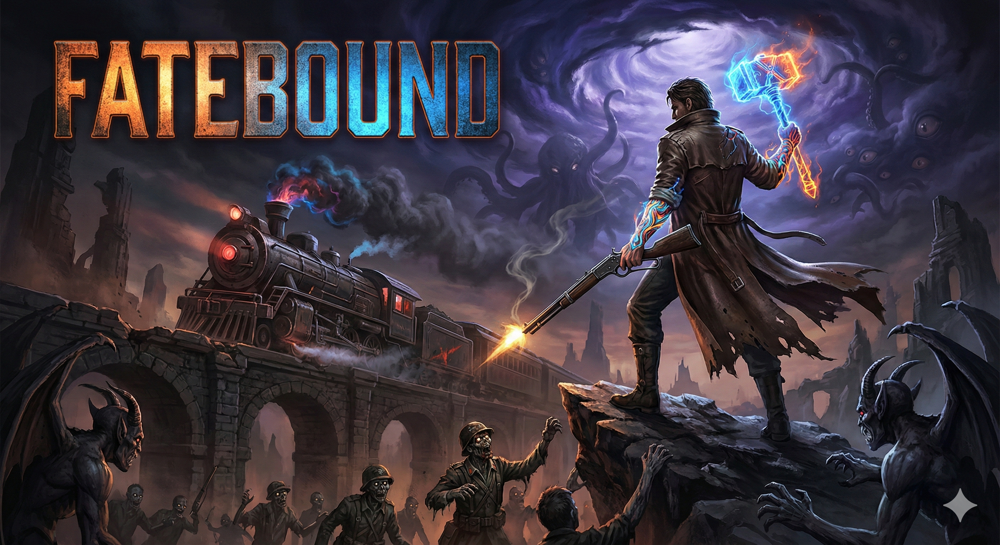

Elevator Pitch: Enter the Gungeon meets Diablo. A run based shooter where you use Kinetic Guns to charge up godlike Ascended Forms.
Genre: 16bit Top Down Twin Stick Looter Shooter
Visual Style: High Contrast Pixel Art (16bit / Gothic)
Target Audience: Fans of Enter the Gungeon, The Binding of Isaac, Diablo, Super Nintendo Era RPGs
A mix of Enter the Gungeon and Diablo. A lone drifter fights through shards of broken worlds collected by the Cosmic Old Gods in their eternal game of war. You collect the weapons of different Gods as you journey to strike down the Cosmic Old Gods and restore your fractured world.
As you defeat enemies, you gain Arcane Ink that can be used level up The Drifter, activate fast travel points called Eternal Anchors, equip tattoos for increased stats and perks, or upgrade weapons. But spend Arcane Ink wisely, as dying will drop all of it unless you can return to your death point and reclaim it.
Weapons of the gods that grant a different ultimate based on the weapon. This ultimate turns you into a Godlike form for a short time, allowing you to cast abilities you could not otherwise as well as granting heavy defenses for a truly powerful feeling.
Instead of armor, you will equip tattoos that provide stats, perks, temporary buffs, and overall power. New stencils can be found by defeating enemies, destroying bosses, or completing quests.
A Dark Souls like currency that has many uses. You must decide what you will devote the currency to.
A hub world in the form of a magical train that travels through space and time. Each zone has a train station that the Midnight Metro stops at to let you disembark.
The combat is defined by the rhythm between Human and Ascended states, as well as strategic elemental damage types.
You have infinite ammo. You use these guns to deal consistent damage and build your Divine Weapon meter.
Reloading is active and timing based to keep it engaging. A perfect reload is faster and boosts outgoing damage for 5 seconds.
*Auto Rifle
*Repeater Rifle
*Sniper Rifle
*Light Machine Gun
*Submachine Gun
*Shotgun
*Revolver
Defines your Ultimate Ability. When the meter is full, you transform into the Ascended state for 30 seconds. You become very tanky and deal massive damage.
*Glaive of the Crusade (Glaive | Holy | Melee):
The soul of a High Crusader merges with yours to bring righteous vengeance upon your enemies. Dash is replaced with Heavenly Dive, a jump that ends with you stabbing the Glaive into the ground. Holding the Dash button will keep the glaive in the ground, building up a blast of Holy energy around you. You can also activate Savior's Storm to spin the Glaive rapidly and enter a whirlwind of Holy strikes.
*Repentant Halo (Halo | Holy | Ranged):
You don the Archangel's Halo, allowing you to float and fire lasers that reach across the entire screen with Angelic Gaze. The Lasers have a chance to Smite weaker enemies, killing them instantly. Stronger enemies hit by Smite have their defenses stripped for a time. You may also use Angel Wings, wrapping yourself in golden wings that apply a shield for an amount of health depending on Max Health. Ground AoE effects cannot damage you in this form.
*Soulstealer (Scythe | Decay | Melee):
Become a reaper of souls, gaining Soul Feast. When an enemy is killed, Soul Feast gains another stack, increasing the damage done by Soulbinder up to 10 times. Soul Famine can be activated to expend all souls, dealing massive damage to a single enemy and enemies in their immediate vicinity. Soul Famine ends Soulstealer's Ascended form after use.
*Skull of Khazz (Skull | Decay | Ranged):
You become the Avatar of Khazz, allowing you to raise the dead to fight for you using Reanimate. The summoned dead can be either an Assassin, a Mage, or a Warrior. Desecrate can be activated, which causes all active Undead to charge a specified position and explode for heavy damage. Sickening Orbs also float around you, infecting any nearby enemies with a Decay DoT.
*Exsanguination (Claws | Blood | Melee):
Embody the spirit of a Vampire, allowing you to move and Dash at high speeds. Melee attacks cause Bleeding, a DoT, and heal the attacker for a small percentage of the damage dealt. Dash is replaced with Bloodthirsty Pursuit, causing you to strike enemies you Dash through with the claws. You may also cast Slaughter, which teleports you behind an enemy and deals massive damage to a single enemy.
*Heartbreak (Crossbow | Blood | Ranged):
Summon a fast firing crossbow and gain True Love and Lovesick. True Love links multiple enemies, causing them to share damage. The accumulated damage is stored in a Blood Orb attached to the initially struck enemy. Lovesick can then be activated to release that stored damage through the entire chain. Any enemies who die from Lovesick explode into gore, which is reabsorbed into Heartbreak, healing you for a portion of the damage dealt.
*Voidseeker (Daggers | Void | Melee):
You wield interdimensional daggers. Your Dash is replaced with Teleport, leaving behind pools of Void energy that damage and slow enemies. You can also activate Thousand Blades to quickly stab and slash an enemy with the daggers. This deals increasing damage as you attack uninterrupted, but you cannot move while using it. Hungering Void may also be cast, which causes all active Void Pools to flare up and deal heavy damage to all within.
*Hellstone (Warhammer | Infernal | Melee):
You grow into a huge demon and smash enemies using the mythical Hellstone. Hitting weaker enemies knocks them back, while stronger enemies are stunned. Hellish Slam, an overhead smash, can be activated, damaging enemies and leaving blue flames that set enemies on fire. You also grow Molten Armor that damages enemies who hit you while in this form.
*Maw of Agony (Staff | Infernal | Ranged):
Arm yourself with a staff topped with a severed Demon head, gaining Demonic Call and Soulfire. Demonic Call summons 3 Imps who continuously cast Fireball, and 1 Behemoth who taunts enemies to attack it. Soulfire deals heavy damage to a single target each time it is cast. Dash is replaced with Blink, which covers a longer range than Dash.
*Icedancer (Sword | Rime | Melee):
Wield the sword forged from an icicle, gaining Frost Armor with high physical and elemental resistance. Dash is replaced with Skate, which leaves a line of ice in the path. Enemies who step on this line will be frozen for an amount of time based on enemy strength. Frozen enemies can then be struck with the sword, causing Icy Explosion, which will damage and freeze enemies near the blast. Alternatively, Cold Snap may be cast, causing you to snap your fingers and cause all frozen enemies to explode into an Icy Explosion simultaneously.
*Frostsoul Orb (Orb | Rime | Ranged):
Summon a frozen orb while gaining Snowstorm, Living Orb, and Icy Pulse. Snowstorm creates a localized blizzard that damages and freezes enemies within. Living Orb allows the Frostmancer's Orb to be moved separately around the room, while Icy Pulse emits a cold pulse from Frostmancer's Orb that freezes unfrozen enemies or shatters frozen enemies into icy shards that damage nearby enemies.
*Stormfall (Katana | Tempest | Melee):
Take on the heart of the storm with the Stormfall katana, gaining Sandstorm Armor, Eye of the Storm, and Stormslash. Sandstorm Armor grants a localized sandstorm around you which deals minor damage, lowers the damage dealt of all enemies within, and heavily increases your dodge chance. Eye of the Storm causes you to leap into the air and slam down on an enemy, creating a storm arena around you that enemies cannot enter or exit, knocking back enemies who attempt to. Lastly, Stormslash allows you to become immune to all damage and strike all enemies within X feet of you.
*Windshock (Chakrams | Tempest | Ranged):
Take control of the storm with the Windshock chakrams, replacing Dash with Dust Devil and gaining Twister, Windwall, and Cutting Winds. Twister is a targeted area ability that will trap all enemies within in a small storm, preventing action for an amount of time based on enemy strength. Windwall creates an impassable barrier in a straight line, perfect for creating funnels and traps that enemies will be forced into. Cutting winds allows you to target either multiple enemies or one enemy multiple times, marking them to throw a chakram and hit each enemy in the order they were marked. Lastly, Dust Devil causes you to turn into a small storm upon Dashing, which knocks back and lowers the accuracy of all enemies hit by it.
There are several different elements that can affect a weapon and the type of damage it deals.
Each element correlates to a specific world and faction, and each enemy has different weaknesses and resistances to elements.
*Physical (White):
Weapons from the Nature world of Viridis. Chance to ignore armor.
*Holy (Yellow):
Weapons from the Seraphic world of Sacellum. Chance to blind enemies.
*Decay (Green):
Weapons from the Undead world of Nex. Chance to apply DoT.
*Blood (Red):
Weapons from the Eldritch world of Caligo. Chance to leech health.
*Void (Violet):
Weapons from the Cyber world of Abyssus. Chance to weaken enemies.
*Infernal (Blue):
Weapons from the Demon world of Letum. Chance to shred armor.
*Rime (Indigo):
Weapons from the Frozen world of Gelidus. Chance to slow enemies.
*Tempest (Orange):
Weapons from the Sandy world of Vastus. Chance to knock back enemies.
Traverse the chosen zone, finding quest hubs, fast travel points, and dungeons as you explore different worlds and biomes.
Defeat enemies with infinite ammo Kinetic Weapons to charge Divine Weapons. Defeated enemies grant Arcane Ink that can be spent.
Return to the Midnight Metro to use Arcane Ink for upgrades and level ups, or spend Arcane Ink in the field to unlock Eternal Anchors, which allow instant travel between them if active.
Complete quests in the zone's overworld, find extensive dungeons with powerful bosses, earn new Kinetic and Divine Weapons, and find new Tattoo Stencils to equip.
Instead of a massive world, the game works in zones. Each Remnant is a broken world destroyed and stolen by the Cosmic Old Gods. Within each Remnant are three Shards, which are individual zones within that world. Each shard houses a single world boss and two Lairs, which act as dungeons that can be farmed for gear and upgrades. One lair will be related to local side quests, while the other progresses the main quests.
Once the main quest Lair of each Shard has been defeated, a fourth zone will open, called a Sanctum. This is a smaller Shard that houses a single Lair, belonging to the head villain of that particular Remnant.
Your home base. You talk to NPCs, equip Tattoos, and choose your Loadout. Gear can also be swapped at Train Stations or quest hubs within a zone.
Within the Map Car of the Midnight Metro, you will open a map menu and choose a Remnant and Shard to travel to.
The Midnight Metro pulls into the Train Station on the selected Shard, which acts as a starting point. From there, you can walk out into the overworld and explore, or interact with the Eternal Anchor to travel to another activated Eternal Anchor within the same Shard.
Remnants are the remains of planets shattered by the Cosmic Old Gods. Each Remnant has a similar story about their arrival in this fractured hellscape.
Once normal worlds full of life, each of them discovered strange relics of unknown origin. For most, the relics did nothing. Scientists and archaeologists studied them hoping to uncover their secrets, each with little success. For some, however, these relics unlocked power unseen by any, power that could only be described as magic to onlookers. These individuals, dubbed Ascended, could utilize these relics to become nearly invincible, inhumanly strong, or supernaturally fast. Little did they know that these relics were planted across the universe by entities known as the Cosmic Old Gods, waiting for someone to unlock their potential.
When a relic was activated, it acted as a beacon to the Cosmic Old Gods, who sprung into action. Tears in reality would form, spewing forth creatures of legend and science fiction to slaughter unchecked. When the Cosmic Old Gods themselves finally arrived, they would take pieces of what was left of the broken worlds and contain them within a pocket dimension as free floating landmasses called Shards.
Within this pocket dimension, the Shards of the broken worlds are forced to wage endless war on each other for the amusement of the Cosmic Old Gods. Even death is not an escape for the denizens of this sick game, as they simply rise again with the memories of the pain of their death. They have no choice but to participate in the bloodsport hoping to one day strike back against the tyrants and finally escape their endless torment...
Nex was the first planet to be subjugated by the Cosmic Old Gods. It was known for its highly religious population who worshipped the spirits of their deceased ancestors, going to great lengths to embalm and preserve their bodies out of respect. Entire cities of catacombs existed beneath the ground, housing innumerable interred dead who once walked the streets of Nex.
Over time, these catacombs started to experience a heightened number of grave robberies, with the perpetrators stealing priceless heirlooms and treasures untold. For obvious reasons, this was seen as blasphemous by the faithful. Whenever possible, these thieves were captured and publicly executed as a means to send a message to any who would defile the worshipped dead. Once executed, their remains would undergo a ritual to cleanse it of the sins of the once living person, and then ceremoniously burned to ensure their body and spirit would have no place among the honored dead.
Among the most notorious of these criminals was Lorian, who pillaged and desecreted countless tombs in search of treasure. On one such occasion, Lorian discovered that the remains of the tomb's occupant glowed a sickly, dim glow. Unable to control himself, he haphazardly ripped apart the bandages of the dead, only to find an eerily glowing skull. He reached out to it, and as his fingers made contact, he felt power unlike anything he had ever felt surge through him.
As his mind melded with the otherworldly relic, Lorian felt an unholy rage building within him. In a fit of anger, he balled up his fist and struck the remains of the tomb he was in, turning the corpse's head to the side. Consumed with fury, he barely noticed when the corpse snapped its own neck back into place, now looking at him once more. Petrified, Lorian fell to the floor in fear, certain that his death was near. With a series of sickening cracks and crunches, the corpse rose from the coffin and walked toward Lorian. Still weak from his connection to the relic, he was unable to defend himself. He closed his eyes and waited for death, but it never came. When he opened his eyes, the corpse was still standing there, staring at him as if waiting for something.
Lorian stood and began to slowly back away from the undead creature, who followed his every step. He walked randomly through the catacombs, taking turns and twists whenever he could, but the corpse followed him at a respectful distance, never looking away. Eventually, with a shaky voice, Lorian pointed to the door and commanded the creature to break open the door. The creature looked at the door before slowly shuffling away down the hall. This confused Lorian, who looked around the corner to see where the creature had gone. With the fervor of a living warrior, the corpse charged through the hallway and slammed shoulder first into the tomb door, causing it to explode into stone shrapnel which knocked Lorian to the floor. When he regained his footing, he stepped into the tomb and reached his hand toward the body interred within. After a few seconds, similarly grotesque snapping noises began to serenade the tomb, and the corpse stood up from the coffin within. Lorian realized he had found something worth far more than any treasure he might plunder.
One day, Lorian returned to the surface, an undead army of thousands at his back. The people of Nex fought back, but for every fallen Necis, a new undead warrior rose in service of Lorian. At this point, his own soul had been consumed by the skull, a slavemaster turned slave to the Cosmic Old Gods' desires. For years, Lorian led a crusade against the living at the bidding of the Cosmic Old Gods, who sat back and watched as their weapon destroyed the planet for them.
When the majority of the Necis had fallen, Lorian and his endless legion of undead fell to one knee. He began chanting in an unknown language, and the very ground beneath them started to shake and shatter. While much of the world crumbled beneath the power of the ritual, the Shards that survived were trapped in stasis and left within the pocket dimension of the Cosmic Old Gods. The Remnant of Nex forever floats in empty space, it's cold stone structures serving as an eternal trophy of the Cosmic Old Gods' sinister machinations...
Known for being incredibly frigid, Gelidus was the next world to fall to the Cosmic Old Gods. The climate of Gelidus was so cold that permanent settlements were only found on the equator where temperature fluctuations were less drastic. Those in the Northern and Southern hemispheres lived nomadic lives, making sure they were always on the move. If a group was too slow with their nomadic travelling, it was a certainty that the winter season would kill them. Winters on this planet were so harsh that even the wildlife migrated North and South with the changing of the climate, as they could not survive the harsh weather either. Even the summers here consisted of snow and ice covering the ground and were barely livable.
One summer, a tribe of nomads were attacked in the night. Their adversaries burned their vehicles and killed their livestock. Women were stolen from their homes, while any man who tried to stop them had their abdomens sliced open and were left to bleed out on the ice. By the time a large enough number of tribesmen arrived, the enemy had already vanished into the dark of night, their banner waving in the center of town as one last insult. Without their vehicles or livestock, the tribe was unable to travel at a fast enough pace to escape the coming winter. It seemed as though their fate was to be frozen solid by the frigid weather, forgotten by the world forevermore. Despite their best efforts, they were unable to outrun the cold temperatures. As the weather cooled, their old and sick were unable to press on, and the harsh conditions killed off many of them. It was clear that pushing forward was not an option, as even the autumn weather was too frigid for survival.
Chief Onaga had one last idea. Every capable tribesman began to dig into the ground. If they could find a way to tunnel far enough through the snow and ice, they could wait out the winter in their makeshift shelter with the food they had stockpiled. It was a long shot, but it was the only plan they had. Days of digging followed, everyone working themselves to exhaustion in a desperate bid for survival. Eventually, they were able to carve out a cavern large enough to house what was left of the tribe.
Days turned into weeks and weeks turned into a month. Many of the tribe had frozen to death within the shelter of the icy cave. Food was dangerously low, and the tribe was too weakened from hunger to hunt, not that any animals would be around anyway. Onaga knew what this meant. He ordered the frozen bodies to be butchered and cooked for the rest of the tribe to eat. Those who refused went hungry and eventually died of starvation, further bolstering the food stores.
Onaga ordered another section of cave to be dug out to store the bodies of their fallen tribesmen for later consumption. As they dug their way through more ice, they stumbled upon something strange. It looked like an icicle, but it was a different color than the rest of the ice, and was sharp to the touch. Each of them tried to pull it from the ice, and each of them failed. However, when Onaga tried, the icicle began to glow. The ice around it cracked and shattered, and in his hand was the icicle. Suddenly, Onaga no longer felt the cold on his skin.
Over the next few weeks, the weather became worse. Onaga, now immune to the cold, watched his tribe slowly die from the cold, one by one. He could do nothing except watch all he loved and cared about wither and die before his eyes. It broke him, driving him to madness all alone in his empty cave. Eventually, he decided to step out into the winter storm in hopes that he too would die and be reunited with his loved ones. He took a deep breath and walked out of the cave, where he felt... nothing. The raging blizzard felt like a fresh spring breeze to him thanks to his strange icicle relic.
Onaga walked through the brutal wastelands for weeks. After he had long lost count of the days, he arrived at a city that he recognized. It was a city established near the equator, and was one of few permanent settlements in the entire world. He had not seen it in many years, and it was much larger than he remembered, and certainly more beautiful. So beautiful, in fact, that tears began to stream down his face. He fell to his knees, finally free of the horrible journey.
When he finally rose to his feet, he began to shuffle into the city. He wandered from place to place, taking in the sights that did not exist the last time he was here. Despite finally being safe, he could not have felt more alone without the company of his loved ones. He trekked through the city aimlessly, without a destination in mind. He eventually made it to a district of the city where tribes could set up camp and temporarily live. Countless tribes he had never heard of stayed here, each selling goods or services, but none of them interested Onaga. Until he happened upon a something he could not ignore.
Deep within the seediest parts of this district was a tribe that sold a different kind of inventory. He approached a member of the tribe, feigning interest in their goods. Onaga was shown around a secluded room filled with dozens of wooden prison cells. Each one held women or children who looked as though their souls had been siphoned from their bodies. Anger began to well within Onaga, but he held it back.
They brought Onaga to a walled off courtyard to show him what they called the premium goods. At the center of the courtyard was a banner that was hauntingly familiar to him. The anger within boiled up again, threatening to bubble over. The tribesman called for the best of the best to be brought out. In a few moments, ten naked women were brought and thrown into the snow of the courtyard, each one shivering uncontrollably. Onaga recognized a few of them, women who had been taken from his tribe during the raid months ago.
He could not contain his rage anymore. Onaga's eyes began to glow a cold indigo, and he stretched out his arm. In one quick motion, the icicle flew from his waist and into his hand. Before the slavers could even react, Onaga had frozen one and sliced another in half at the abdomen. More slavers rushed to attack Onaga, but it mattered not. Within seconds, two dozen men were frozen solid. It was then that the tribe Chief heard the commotion and stepped into the courtyard. When the Chief saw Onaga, his eyes went wide and his pale skin turned even more pallid. Onaga was supposed to be dead, how was he here so many months after the raid? Onaga locked eyes with the slaver Chief, lifted his left hand slowly, and snapped his fingers. In a single moment, all two dozen frozen men exploded into shards of ice, one of which flew right past the Chief, slicing his cheek.
Onaga stepped forward to the slaver chief and pointed his frozen sword at the Chief's feet. Like mold growing on an old piece of food, ice began to creep up the Chief's feet and legs. The Chief slaver screamed in both fear and pain, becoming more frantic as the ice grew up his legs, up his torso, and down his arms. He begged Onaga to free him, offered him money and power in exhange for his life. But Onaga had no use for these things anymore. Once the ice had frozen the Chief up to his neck, Onaga stopped the spread. He looked the Chief in the eyes, lifted his hand, and placed his fingers into position to snap once more. The light drained from the Chief's eyes, realizing his fate. Through deafening silence, the sound of a snap rang out. When city guards finally arrived to put a stop to the violence, all they found was the tribe's tattered banner and a frozen head with a sliced cheek impaled on its pole, an expression of fear forever locked in place.
The eerie silence discovered by the city guards was broken abruptly by a groundquake. In a matter of seconds, dozens of portals appeared, spewing forth an infinite legion of undead. From one of these portals, Corpse King Lorian emerged. He watched in silence as his legions slaughtered once more. Amidst the chaos, Lorian got down onto one knee and began to chant in an unknown language. The ground started to crack and break apart, just like on Nex.
When the ritual was complete and Gelidus shattered, the Cosmic Old Gods imprisoned the surviving shards within their pocket dimension. As if the Pruinosi of Gelidus had not suffered enough, the Cosmic Old Gods made the Remnant of Gelidus even colder than it was before, freezing the survivors while trapping their souls in the frozen bodies. Onaga, however, did not accept this fate. Using his powers of ice, he animated the frozen Pruinosi, giving them life once more, and marched onwards to war against Corpse King Lorian's Endless Horde...
The Strix of planet Caligo lived lavish lives. Living in exquisite gothic architecture and sleek black and crimson velvet outfits, the Strix embodied the epitome of high class. Queen Coraline was known for hosting massive banquets for the upper class of the cities. Nobles came from across the world with gifts for Queen Coraline in an attempt to gain her favor, and the dance halls were filled with the wealthy, dancing and drinking their nights away with glee.
Not all was as it seemed, however. While the fortunate partied their lives away without a care in the world, the poor spent their time living in the filth of the slums, unsure of what tomorrow might bring or if they would even live to see it. Within those darker corners of Caligo were hunger, crime, and plague. The poor frequently beat and stole from each other, sometimes even going as far as to murder their fellow Strix just to survive another day. Meanwhile, the ruling class simply pretended that the poor didn't exist.
Every once in a while, the poor fools residing in the slums of Caligo would get it into their heads that they deserved better. Some of them would dare to dream of a better life, sometimes even going as far as to rise up against Queen Coraline and her people. The story always went the same way, however, ending in the execution and merciless slaughter of any dissidents. Thus the cycle of hunger and pestilence continued time and time again.
One day, a noble came to Queen Coraline's court with a lavish gift, attending a banquet that she was hosting, something that had happened thousands of times before. He was greeted at the banquet hall like any other noble, and found his place within before the start of the ceremony. He waited eagerly for his turn to present his gift to Queen Coraline, for he had found something that would gain him more favor than any other noble could hope for.
One by one, the nobles presented their offerings to Coraline. When it was finally time, the final noble approached Queen Coraline's throne, got down onto one knee, and lifted a treasure box above his head. A Queensguard Knight opened the box to find a beautifully crafted pair of ornate gloves. Affixed to the fingers of the gloves were razor sharp claws, a stark contrast to the shined and encrusted rubies that adorned the top knuckles.
The Queensguard knight brought the box to Queen Coraline, who gasped in awe at the offering. The other nobles knew that they had been outmatched as the gift giver explained that she was holding a relic from a long ruined castle. Despite being more ancient than any living civilization on Caligo, the gloves remained pristine and wearable. Aside from this small bit of information, nobody knew the true nature of the relic or its origin.
Later that night, after the banquet had ended and the nobles had left the court, Queen Coraline's curiosity got the best of her. She pulled the gloves from the box and put them on, admiring their craftsmanship and beauty as she did so. Once the gloves were on, something odd happened. The rubies began to glow a bright scarlet, as if generating light from within themselves. A bright flash filled the room, nearly blinding Coraline, who fell to the floor.
She felt thoughts racing through her mind. Bloody, gruesome thoughts that were not her own. She could feel something crawling into the depths of her mind, gnawing at her sanity. She let out a blood curdling scream that rang through the halls of her palace, which startled the Queensguard into action. They rushed to Coraline's room to see what was causing her distress.
When they entered her room, they saw her standing at her vanity mirror, admiring her reflection. Except... she had no reflection to admire, which made the Queensguard Knights uneasy. Seeing them in the mirror, Coraline turned around with a warm, seductive smile. She beckoned a Queensguard Knight over to her, who hesitated in fear. Coraline's smile turned into a frown, and in one swift motion, she dashed toward the Queensguard Knight, stopping mere inches from his face.
Suddenly, her smile returned, and she began to exhale Red Mist into the Queensguard Knight's mouth. He fell to the floor, choking and sputtering, coughing and gasping, before finally collapsing. Before the other Queensguard Knight could react, she appeared behind him, grabbed his head, and breathed the same Red Mist into his airway. When he, too, had collapsed, Coraline commanded them to rise. Slowly, they both rose, skin white as snow and eyes red as blood. Satisfied with her work, she asked them to assemble the Queensguard so that they could all be transformed. Before the night was over, Coraline's Sanguinari were born.
Days later, Coraline demanded another banquet be held, but this time it would be different. Like clockwork, nobles from all over came to the court to pay their respects to Coraline. When the first noble offered up his trinkets, Coraline found them wanting. She stood up from her throne, walked down the steps, and looked down upon the noble. She lifted his head, gently stroking his cheeks with the claws of her gauntlets before sinking the claws into his throat. In a matter of moments, the noble's body shriveled and withered as though his blood had been drained, though not a single drop of it was seen. The remaining nobles gasped in shock and fear. Some tried to run, only to find that the exits had been blocked by the Sanguinari, who lifted their fingers to point at the throne. Trembling in terror, the remaining nobles offered their gifts to Coraline. In return, she either drained them of their blood, or bestowed the gift of the Sanguinari's Red Mist upon them. By the end of the banquet, every attendee was either dead of converted to Coraline's dark cause.
Those within the slums knew not of the events of that night, so when Coraline called for a gathering of the entire ruling class, the poor decided that they would strike once again. After the majority of the guests had arrived, the stained glass windows suddenly shattered and hundreds of sick and hungry people flooded the grand hall with makeshift weapons forged from whatever scraps they could find. They had expected to catch the nobles unaware and drunk, but they could not have been more wrong. Coraline laughed a wicked, sinister laugh, and disappeared into thin air. She appeared behind a plague stricken dissident, turned him around to face her, and slashed his throat open with her claws. He fell to the floor, his blood staining the once perfect stone, not worth taking by Coraline.
Chaos ensued as the Sanguinari descended on the poor insurgents, draining their blood or converting them into mindless Bloodfiends with their own less potent Red Mist. When the last of the insurgents had fallen, Coraline and her Sanguinari took the hunt to the innocent, those who had nothing to do with the uprising. The cool night air was chilled further by the screams of those who fell to the Sanguinari.
As the Strix population dwindled and the Sanguinari's swelled, the slaughter was interrupted by the ground shaking. Green and Indigo portals tore open the air, spewing the undead of the Endless Horde and the frozen warriors of Warchief Onaga's Glacial Legion. For the first time, Coraline was caught off guard. The Sanguinari fought back viciously, pushing the Endless Horde and Glacial Legion back, but it was futile. More and more portals ripped themselves open, each one with an army behind it.
Amidst the raging battle, Corpse King Lorian appeared through one of the portals and began his world ending chant. Like the other planets graced by his presence, the ground broke apart, crumbling under its own weight, before being snatched by the Cosmic Old Gods to become another pawn in their game of war. Small pockets of uncorrupted Strix still remain on the Remnant of Caligo, offering sanctuary from the ruling Sanguinari and the invading Remnants of other broken worlds as they float within the pocket dimension of the Cosmic Old Gods.
Sanctum: The Crimson Clocktower
Vastus was next to fall to the sinister plans of the Cosmic Old Gods. The entire planet was an arid desert full of sand, and was known especially for the brutal sandstorms that continuously raged across the surface. The Arenarii were well versed in hiding from the storms, whether in caves or underground tunnels, and thanks to the brutal conditions on Vastus, they were adept at salvaging scrap from objects other would have dismissed as trash. Food sources mostly consisted of animals adapted to desert climates, such as reptiles, rodents, and plenty of hard shelled bugs. Due to their rarity and cleverness, successfully hunting a mammal on Vastus was seen as a portent of luck, good fortune, and positive karma.
Traditional cities don't exist on Vastus, as the Arenarii live in tightly knit hunter clans across the surface of the planet. Instead, large markets will form and dissipate depending on how many clans are near each other, selling anything from meat and animal fur to artistic pieces and ornamental weapons. Anything that can fetch a price can be found at these markets, no matter how insignificant the item may seem. Once a clan runs out of goods to sell, they pack up their stall and move on. This creates a dynamic layout for each market that forms, which can be confusing even to the Arenarii at times.
Because of their hunting/gathering lives and their merchant/trader society, many clans would search far and wide for old or ancient objects that could be sold at a high price. While dangerous, spelunking sunken temples and cities was the fastest way to strike it rich. Some clans lived exclusively through these means, forgoing hunting for their own food and opting to trade for trinkets they find in the vast desert sands. While many Arenarii have met their demise in these spelunking trips, it isn't considered a loss if their goods can be retrieved by the others of their clan, as to die in service of their clan is the ultimate honor to the Arenarii. In the event that it does happen, their clan will prepare a great feast to send the fallen spirit off to the afterlife with a full belly and a full heart.
For Nesiri, spelunking was the only life her and her clan knew. Hunting and foraging never seemed to click to them, but without some form of income or trade goods, they would not last in the harsh desert conditions. Thanks to her small frame and nimble dexterity, she was heavily relied upon to reach the more cramped spaces that could be hiding treasures. For her, it was the most thrilling life she could imagine, her entire life's work was to do what no others could for the survival of her clan. She was a master of acrobatics and clever when it came to disarming or avoiding traps. Her clan was not oblivious to this fact, and frequently treated her like an extraordinary hero.
After years of treasure hunting, Nesiri's Clanmother suggested that they search Scavenger's Folly, a temple buried in the sand that was notorious amongst the Arenarii for being a deathtrap. Dozens of clans have gotten it into their head that they could brave the depths and come out alive, and all have been wrong. Nesiri tried and tried to persuade the Clanmother that this was too dangerous of a mission, but each time she was told that with her superior skills, she would prove all the other clans wrong. The Clanmother truly thought that this would be her clan's claim to fame, with clans coming from across the world to see and purchase the countless trinkets they would find. Nesiri knew it was a bad idea, but had little choice in the matter, as the Clanmother was the de facto leader of the group.
The clan began their descent into Scavenger's Folly, Clanmother leading the pack. The trip was dangerous, with the ground beneath their very feet collapsing in some places. Despite a few close calls, the expedition was progressing smoothly. At some point, they reached a large empty room and the Clanmother decided that they would rest here before continuing deeper into the temple. The Clanmother sat down against a wall, pushing her back into the stone, but to her surprise, the stone began to move. After a couple inches, a loud click rang out, and the exits became sealed by large sandstone slabs.
A worldshaking rumble began, and two walls started to slowly close in on each other. The Clanmother panicked and ordered the clan to search for a way to disable the trap. The entire clan began scurrying across the room, looking for hidden switches or levers, but to no avail. Nesiri spotted a small opening near the ceiling, high up the wall. It was high enough that Nesiri could make it, but nobody else would be able to, and Nesiri was not strong enough to pull anyone up on her own. Using the tallest member of the clan as a springboard, Nesiri was barely able to climb the divots of the wall and reach the opening, only to find that it led nowhere.
The Clanmother called to Nesiri to find anything that could help them, but there was nothing she could do. The clan tried to break through the sandstone slabs, the floors, or the walls with their weapons, but they were all too solid to break through. They tried lifting members of the clan up high enough to reach Nesiri's cutout, but they kept falling short. Time was running out, the walls were harrowingly close, something had to be done. When the walls were but a dozen feet apart, the Clanmother was able to get enough footing to reach Nesiri's hand. Nesiri pulled and pulled, but the Clanmother was barely moving. Mere seconds remained to save her and figure out a way to stop the trap. Nesiri closed her eyes and put all of her strength into her arm. After several seconds she heard screams, followed by the sound of crunching and liquid. Then, deafening silence.
She felt an overwhelming pain in her shoulder. She opened her eyes to see that the walls had fully closed, and her arm must be nothing but a puddle of mush running down the inside. Her arm was stuck, and she pulled against the wall, which caused a pain through her entire body that was greater than she had ever felt in her life. She screamed aloud, tears streaming down her face as she braced herself. She pulled one more time and... pop... she was free of the wall, now with bloody meat dangling from her right shoulder. She backed up into the wall and slid down it to a sitting position. She let out a gutteral scream that she didn't know she was capable of and sobbed, trapped in the cutout.
A few minutes later, another click was heard, and the wall opposite the trap slid open, almost causing Nesiri to fall backwards through it. She stood up and looked through the new opening to see what appeared to be a room full of relics and keepsakes. Stepping into the room, she began to look around the room, studying each of the baubles. One in particular caught her eye, a pair or ornamental chakrams sitting within a glass box. They looked like they had never been used before, as there was not a single scratch or scuff on them. They were truly captivating to her, and she stared at them wide eyed.
Nesiri picked up the pair of chakrams in her remaining hand, and instantly felt herself gain a second wind. The chakrams began to glow, and the sand within the room started to swirl around her. She looked around, afraid of hat was happening. After a few seconds, the sand itself wrapped itself around her blood stump of a shoulder, as if acting as a tourniquet on its own. From the sandy wrapping grew an arm of pure sand, and when she tried to move and control it, it reacted as if it actually was her arm. Nesiri stared in disbelief, unable to comprehend what was happening to her.
Alien
Demon
Seraph
Human
------------------------------------------------------------------------------------------------------------------------------------------------